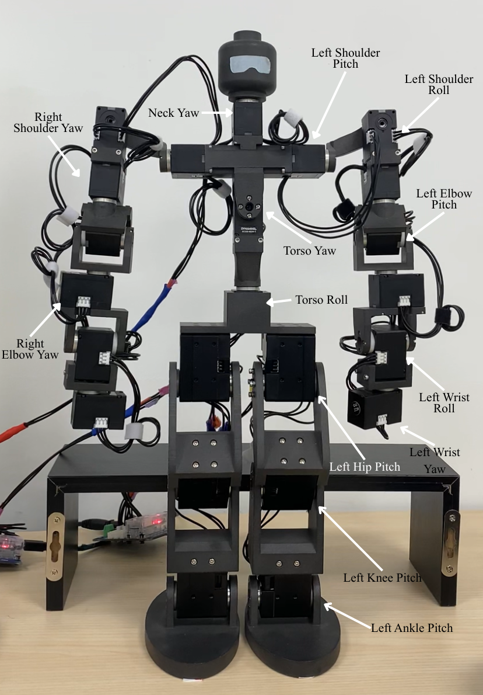
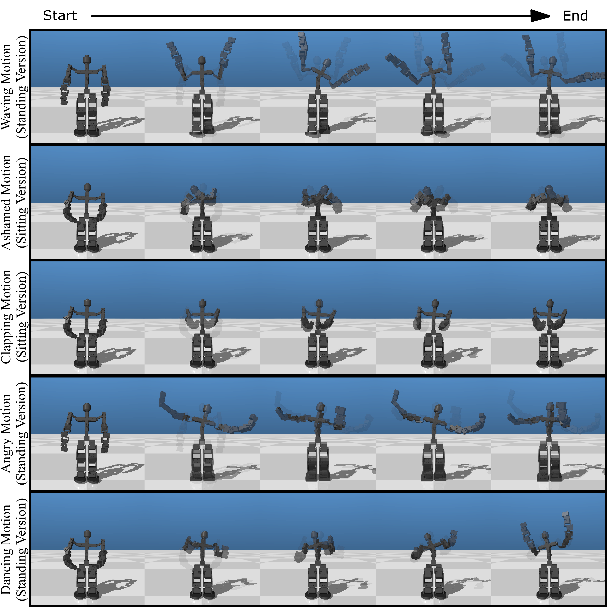
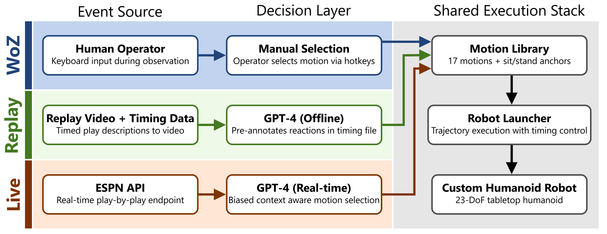
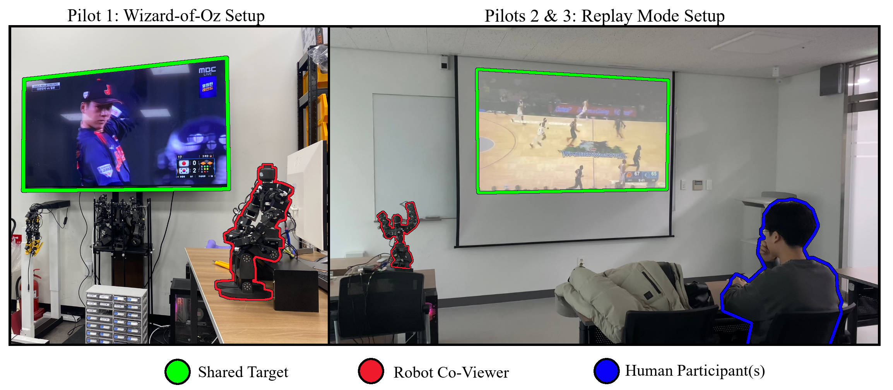

Event-Aligned Social Robotic Co-Viewing for Sports: A Humanoid Peripheral Companion
Accepted to SCR@Home ICRA 2026 Workshop
Shared Challenges in Human-Centered and Resilient Robotic Autonomy, Vienna, Austria.
Abstract
This work investigates an event-centred framing of robotic companionship in which a physically embodied humanoid robot serves as a peripheral co-viewer during sports programming, reacting to unfolding game events. We present a compact whole-body motion library grounded in spectator affect theory and a system architecture supporting Wizard-of-Oz, replay, and live operation modes for controlled and autonomous event-aligned reactions.
Three pilot studies examine how an embodied co-viewer influences enjoyment, shared reality, and interpretation of affective alignment across individual and group viewing contexts. Exploratory findings suggest that in group settings, the robot's expressions increased pleasure and engagement without disrupting shared reality among human viewers, while effects were mixed in solitary viewing.

Figure 1. Custom 23 DoF humanoid tabletop robot platform.
Research Questions
- RQ1: Does the presence of an embodied robot co-viewer influence enjoyment relative to viewing alone?
- RQ2: Does event-aligned robotic co-viewing alter perceived shared reality among viewers?
- RQ3: How do viewers interpret the robot's affective responses, including perceived alignment and team bias?
Contributions
- Event-centred companionship model: A physically embodied humanoid participates peripherally by reacting to a shared unfolding narrative rather than monitoring or assisting users.
- Operational co-viewing platform: A compact interpretable whole-body motion library integrated into Wizard-of-Oz, replay, and live execution modes.
- Pilot insights: Exploratory observations on enjoyment, shared reality, and perceived affective alignment across WoZ, individual replay, and group replay settings.
Method Overview
The system is implemented on a custom 23 DoF tabletop humanoid robot with a fixed library of expressive whole-body motions and posture transitions. Reactions are constrained to nonverbal spectator behaviors such as celebration, protest, and disappointment.
Event-to-motion mapping uses a constrained semantic selection policy over play-by-play context. Execution is coherence-preserving: motions are serialized, run to completion, and overlapping events are skipped rather than queued.

Figure 2. Sample whole-body motions from the event-aligned reaction library.

Figure 3. Event-aligned robotic co-viewing system architecture.
Three operation modes were developed: manual Wizard-of-Oz triggering, replay mode with synchronized recorded events, and live mode with delayed real-time feed processing.
Pilot Studies
- Pilot 1 (WoZ, group): Six participants watched a Korea-Japan baseball game with operator-triggered reactions.
- Pilot 2 (Replay, individual): One participant viewed an NBA replay with autonomous reaction selection.
- Pilot 3 (Replay, group): Five participants viewed the same replay with identical autonomous mappings in a group setting.

Figure 4. Experimental setup for the pilot studies.
All pilots used a within-subject structure with baseline viewing first and robot-present viewing second, and measured enjoyment and shared reality.
Key Results
- In Pilot 1, pleasure and relatedness increased with the robot present.
- In Pilot 3, engagement increased significantly while shared reality remained stable.
- Across pilots, participants generally interpreted the robot as affectively aligned with game events.
- Most viewers correctly identified the robot's apparent team preference, but reported little persuasive effect on their own support.
.png)
Figure 5. Baseline versus robot-present comparisons for Pilot 1 and Pilot 3.
Discussion and Limitations
The pilot evidence suggests peripheral robotic co-viewers can enrich collective media experiences in group contexts, mainly by acting as affective amplifiers of shared narratives rather than standalone substitutes for human co-presence.
Interpretation remains exploratory due to small sample sizes, fixed condition ordering, and differences in viewed content across pilots. Future work should run larger controlled studies, evaluate longer-term exposure, and further validate live-mode robustness.
BibTeX
@inproceedings{elhelou2026eventaligned,
title={Event-Aligned Social Robotic Co-Viewing for Sports: A Humanoid Peripheral Companion},
author={El-Helou, Roy and Pan, Matthew K.X.J.},
booktitle={Shared Challenges in Human-Centered and Resilient Robotic Autonomy (SCR@Home), ICRA 2026 Workshop},
address={Vienna, Austria},
year={2026}
}